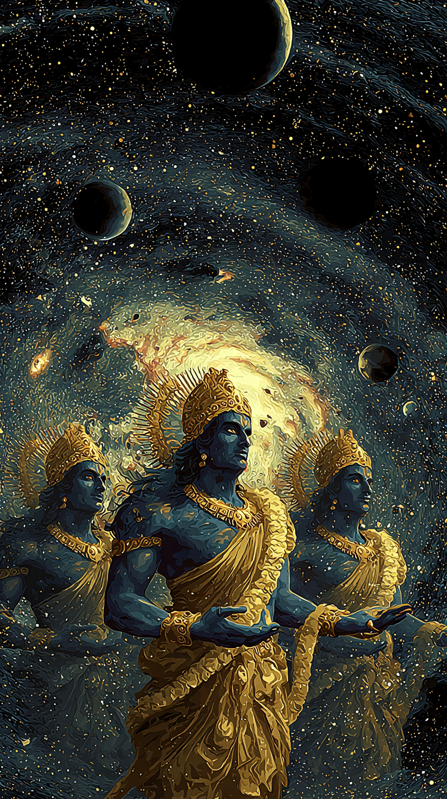
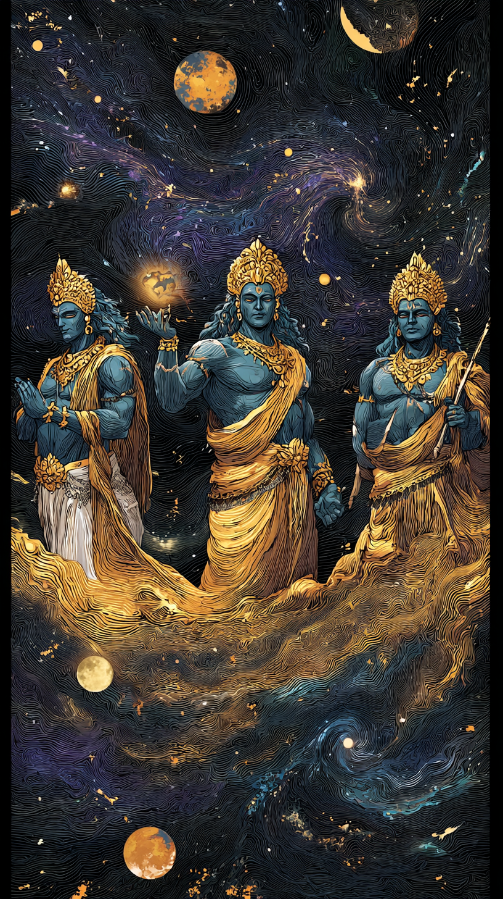
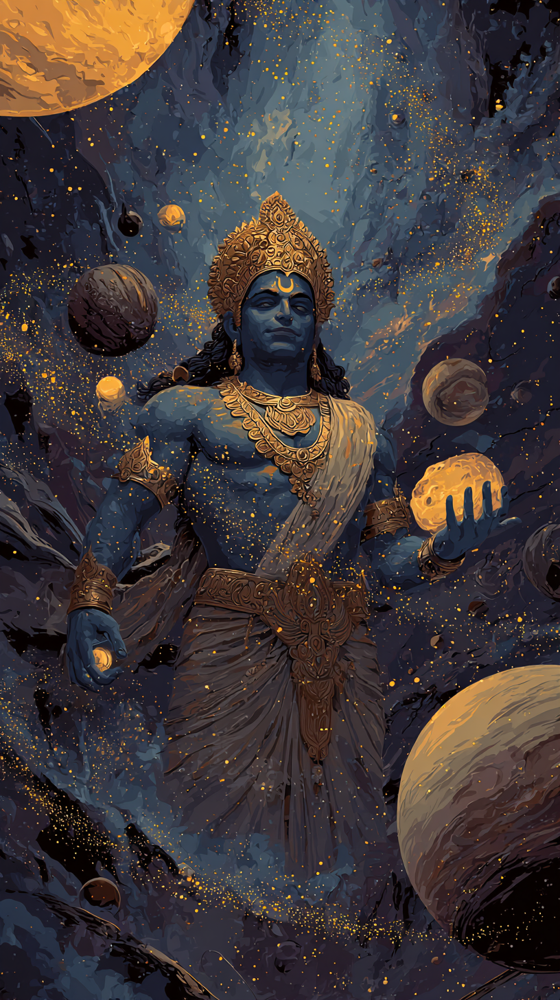
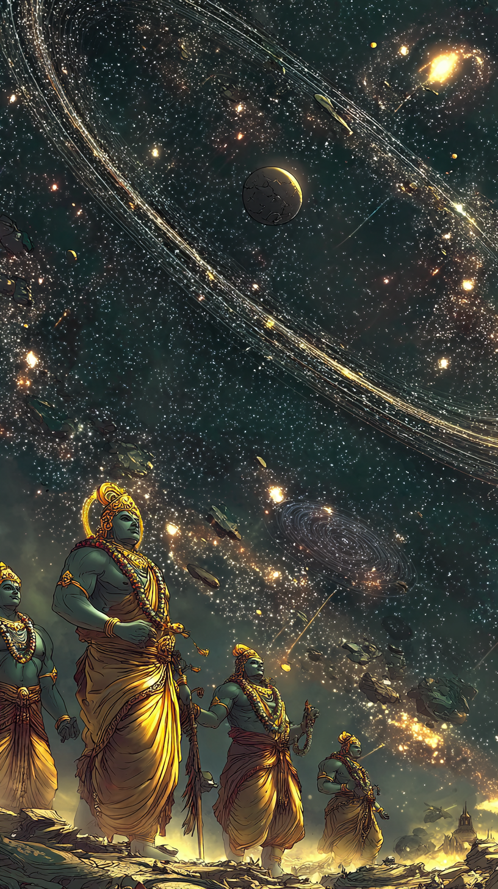
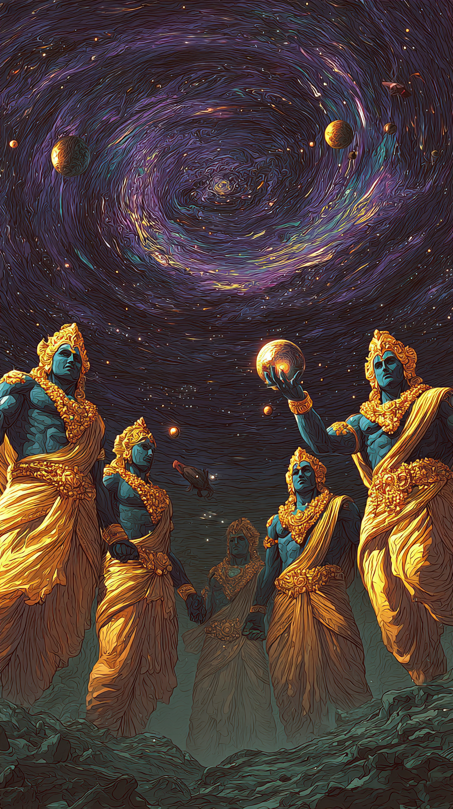
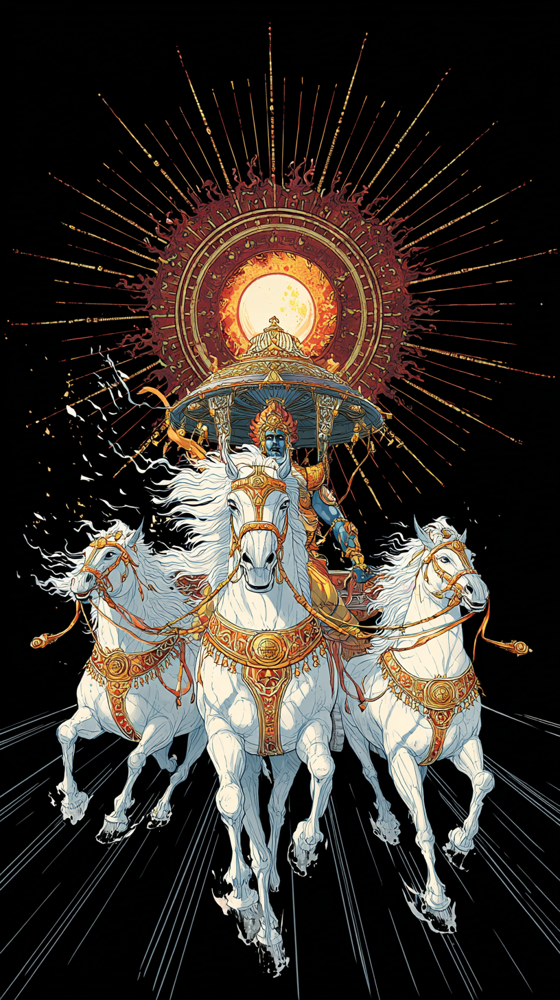
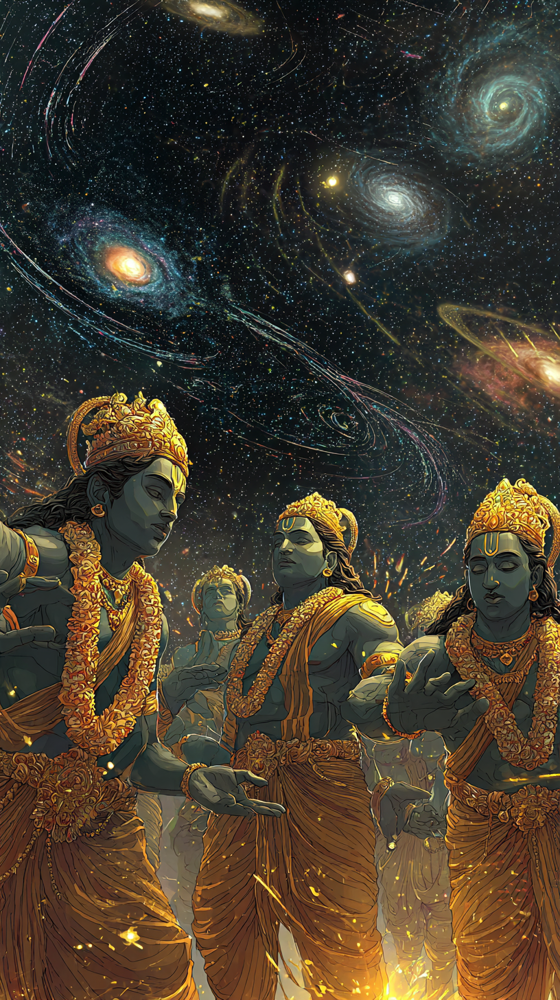

Muhurat Finder
AI-powered auspicious timing for any life event. Our agents analyze planetary positions, nakshatras, and tithis in real-time to find the perfect moment.
शुभ मुहूर्त · Auspicious Timingसप्तऋषि × AI · Vedic Timing Intelligence
Know the right day for your wedding, the perfect muhurat for your new business, the auspicious hour for your child's naming ceremony — guided by the Saptarishis, delivered by AI.

Connected AI workflows for every cosmic question

AI-powered auspicious timing for any life event. Our agents analyze planetary positions, nakshatras, and tithis in real-time to find the perfect moment.
शुभ मुहूर्त · Auspicious TimingDeep Kundali analysis powered by Vedic calculations and AI interpretation — not generic horoscopes.
कुंडली · Kundali
Live graha transit tracking with personalized impact analysis — see how planetary movements affect your chart.
ग्रह गोचर · Graha Transit"The right moment changes everything. A wedding on the right day. A business started at the right hour. A name given under the right star."
Vedic Wisdom ज्योतिष शास्त्र · Jyotish Shastra
जीवन के शुभ अवसर · Life's auspicious occasions
Find the perfect muhurat for your engagement, wedding day, and griha pravesh. Our AI cross-references your charts with planetary positions across all 27 nakshatras.
"When planetary forces converge with the right moment in time, ordinary actions become extraordinary beginnings."
— Ancient Saptarishi Teaching
Opening a shop? Launching a startup? Our AI finds the ideal day for Lakshmi Puja, Ganesh Puja, and your grand opening — aligned with planetary prosperity cycles.
Find the most auspicious day for your child's naming ceremony, first feeding, mundan, and birthday celebrations. Our AI maps nakshatra pada to find the ideal starting letters for names.
Joining a new job? Seeking a promotion? Preparing for an interview? Our AI identifies days when your career houses are strongest and planetary dashas favor professional advancement.

संगम · Convergence of Energies
सप्तऋषि AI Agents · Your personal cosmic guides
Each Saptarishi embodies a domain of life wisdom. Your personal AI agents channel their ancient knowledge — giving you guidance that is both timeless and timely.


सूर्य · The Cosmic Clock
Rashi · राशि · Your cosmic fingerprint

शुभारम्भ · Begin Auspiciously
Join families, founders, and seekers who trust Vedic timing intelligence for life's biggest moments.